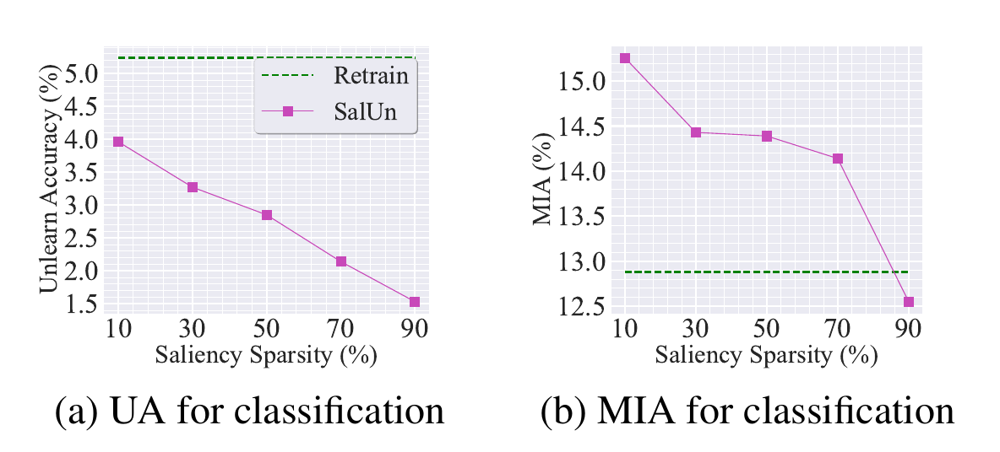
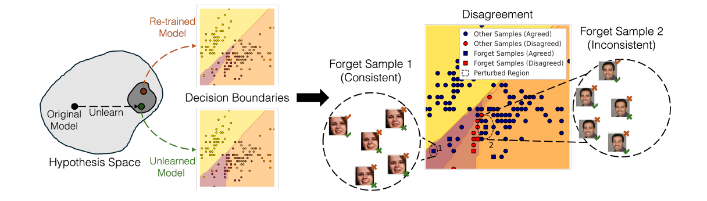
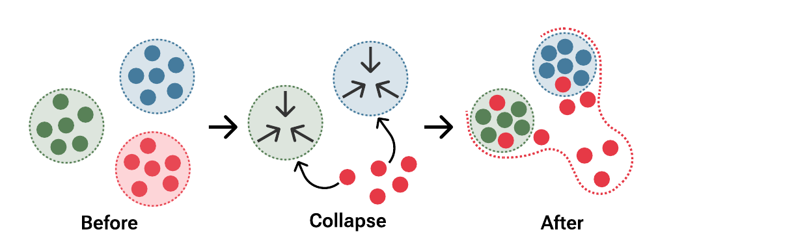

What Does It Mean
for a Model to Forget?
Machine unlearning before LLMs: foundations, certification, classification
Albert No · Yonsei University
2026
Contents — Part I
Part II takes these ideas to LLM unlearning and benchmarks.
Definition and Certified Unlearning
From the right to be forgotten to a theorem with constants
The Central Question
A user withdraws consent. The data point is deleted from the database in one line of SQL.
But the model was trained on it. What do we owe the user now?
- Deleting the row does not undo the gradient steps it produced.
- The weights still carry the point's influence, and attacks can read it back.
- Retraining from scratch is correct and, at frontier scale, unaffordable.
Unlearning is the study of what lies between those two facts.
Why This Became Urgent
Law
GDPR Art. 17, CCPA. Regulators read "erasure" as reaching the model.
Evidence
Training data is extractable from weights. "Not a copy" is no defence.
Cost
Retraining per request is impossible. Deletion must beat training.
One technical object: a cheap operation whose output distribution looks like retraining.
Three Definitions That Do Not Work
- "No longer reproduces $z$." A model that never saw $z$ may still reproduce it.
- "The loss on $z$ is high." Achieved by destroying the model. Wrong if damage maximises it.
- "No attacker detects $z$." Attacker-relative: certifies the attack, not the algorithm.
Fix: define forgetting against the counterfactual world in which $z$ was never used.
Roadmap — Section 01
- Retraining is the gold standard. Everything else is measured against it.
- One Newton step approximates it to $O(1/n^2)$ under convexity.
- Gaussian noise converts that residual into an $(\varepsilon,\delta)$ certificate.
- Residuals accumulate, so the number of deletions is a finite budget.
- Alternative route: change how you train, so that deletion is structurally cheap (SISA).
The Gold Standard: Retrain From Scratch
Let $\mathcal{A}$ be the learning algorithm, $D$ the training set, $z \in D$ the point to delete.
- Correct by construction: the weights are a function of a dataset that never contained $z$.
- Cost: one full training run per request. Requests arrive continuously.
- Also required: you must have kept $D$, which is itself a retention problem.
Every definition below is an attempt to buy this guarantee at a lower price.
Definition 1 — Data Deletion Operation
For a randomised learner $\mathcal{A}$, a map $\mathcal{U}$ from (dataset, request, model) to a model is a data deletion operation if, for all $D$ and $z \in D$,
Equality is in distribution, over the randomness of both $\mathcal{A}$ and $\mathcal{U}$. Not equality of weights.
Deletion as a Commuting Diagram
The definition says the square closes. It says nothing about how you get across the top.
Definition 2 — Exact Unlearning
$\mathcal{U}$ is an exact unlearning algorithm for $\mathcal{A}$ if for every $D$, every $z$ and every measurable $S$ in parameter space
- This is Definition 1, written as a statement about probabilities.
- Retraining is exact, trivially. The content is in achieving it cheaply.
- Achievable non-trivially only for structured $\mathcal{A}$: $k$-means, linear models, or by construction (SISA).
Definition 3 — $(\varepsilon,\delta)$-Certified Unlearning
$\mathcal{U}$ is $(\varepsilon,\delta)$-certified for $\mathcal{A}$ if for every $D$, every $z \in D$ and every measurable $S$
Both directions are required. The shape is deliberately the DP shape, but the two distributions being compared are different objects.
How the Three Definitions Sit
Exact sits inside certified for every $\varepsilon$. A DP learner lands inside certified without moving a single weight.
Proposition 1 — Exact Implies Certified
If $\mathcal{U}$ is exact for $\mathcal{A}$, then $\mathcal{U}$ is $(\varepsilon,\delta)$-certified for every $\varepsilon \ge 0$ and every $\delta \ge 0$.
Proof. Write $P$ for the law of $\mathcal{U}(D,z,\mathcal{A}(D))$ and $Q$ for the law of $\mathcal{A}(D\setminus\{z\})$. Exactness gives $P = Q$, so for every $S$
since $e^{\varepsilon} \ge 1$ and $\delta \ge 0$. The reverse direction is identical with $P$ and $Q$ exchanged. $\blacksquare$
Proposition 2 — DP Gives Certification for Free
If $\mathcal{A}$ is $(\varepsilon,\delta)$-DP under removal of one example, then the do-nothing operation $\mathcal{U}(D,z,\theta_o) = \theta_o$ is $(\varepsilon,\delta)$-certified.
Proof. $\mathcal{U}$ releases $\mathcal{A}(D)$ unchanged, and $D$, $D\setminus\{z\}$ are neighbours. DP applied to $\mathcal{A}$ gives, for every $S$,
and the same with the two sides exchanged. That is Definition 3. $\blacksquare$
Counterexample — Certified and Useless
Take $\mathcal{A}$ to be the constant algorithm $\mathcal{A}(S) = \theta_c$ for all $S$, and $\mathcal{U}$ to be do-nothing.
- $\mathcal{A}$ is $(0,0)$-DP: its output does not depend on the data at all.
- By Proposition 2, $\mathcal{U}$ is $(0,0)$-certified. It is even exact.
- It deletes nothing, because there was nothing to delete. And it predicts nothing.
A certificate constrains the pair $(\mathcal{A}, \mathcal{U})$. On its own it is not evidence that any information was removed.
What a Certificate Does and Does Not Buy
Does
Bounds every test that anyone could run on the released weights, including tests invented later.
Does not
Say the model is useful, that $\mathcal{A}$ ever learned $z$, or that other points are protected.
So a claim of certified unlearning is only meaningful stated as a triple:
Report one without the others and the statement is empty.
Certified Unlearning Is Not Differential Privacy
Proposition 2 goes one way only. The converse fails, and it fails for a structural reason.
DP compares
$\mathcal{A}(D)$ against $\mathcal{A}(D')$ for every neighbouring pair, before any request arrives.
Certification compares
$\mathcal{U}(D,z,\theta_o)$ against $\mathcal{A}(D\setminus\{z\})$, for the requested $z$ only, after the fact.
- Nothing in Definition 3 bounds the released model against $\mathcal{A}(D \setminus \{z'\})$ for a point $z'$ nobody asked about.
- Consequence: a certified unlearner may leak every retained point, and still hold its certificate.
Corollary — Certification Needs a Partner
Combining Proposition 2 and the counterexample:
An unlearning claim is a claim about indistinguishability at a stated cost with stated utility. Any one of the three alone is achievable trivially.
- Indistinguishability alone: do nothing to a DP model.
- Cost alone: return random weights in zero time.
- Utility alone: do nothing to a normally trained model.
The rest of Section 01 builds a mechanism that holds all three at once, for convex losses.
Standing Convention
Regularised empirical risk on a dataset $S \subseteq D$, with the normalisation fixed by $n = |D|$:
Write $\theta_{-z} = \arg\min_\theta F(\theta; D \setminus \{z\})$ for the retrained target. Then, exactly,
A Word on the $1/n$ versus $1/(n-1)$ Choice
An honest retrain would average over $n-1$ points. Compare the two objectives:
- Positive rescaling does not move a minimiser, so the conventions agree with $\lambda \to \lambda(n-1)/n$.
- The gap is a relative change of $1/n$ in regularisation strength, common to all $z$.
- We fix $1/n$ throughout, as the certified-removal literature does.
Assumptions for Section 01
- A1 (bounded gradients). $\lVert \nabla_\theta \ell(\theta; z)\rVert \le G$ for all $\theta$ and all $z$.
- A2 (strong convexity). Each $\ell(\cdot; z)$ is convex, so $F(\cdot; S)$ is $\lambda$-strongly convex for every $S$, courtesy of the regulariser.
- A3 (Hessian smoothness). $\theta \mapsto \nabla^2 F(\theta; S)$ is $M$-Lipschitz in operator norm.
A1 bounds how hard one point pulls. A2 makes the Hessian invertible. A3 bounds the curvature error of one Newton step.
The Two Things $\lambda$-Strong Convexity Buys
Invertible Hessian
$\nabla^2 F \succeq \lambda I$, hence $H^{-1}$ exists and $\lVert H^{-1}\rVert \le 1/\lambda$. Every formula below divides by $\lambda$.
Gradient growth
$\lVert \nabla F(x) - \nabla F(y)\rVert \ge \lambda \lVert x - y \rVert$. A small gradient forces a small distance to the minimiser.
Together: removing one of $n$ points moves the optimum by $O(1/n)$.
Not strongly convex? Add an $\ell_2$ term. Deep networks violate A2 regardless — hence Section 02.
Can We Reach $\theta_{-z}$ Without Retraining?
We know $\theta_o$ and we want $\theta_{-z}$. Both are minimisers of objectives that differ by one term of size $1/n$.
- Idea: connect the two by a continuous path and differentiate.
- That derivative is the influence function, and its first-order step is the Newton step.
- The question that decides everything: how large is the error left over?
Down-Weighting the Point Continuously
Introduce a weight $t \in [0,1]$ on the point being removed:
- $t = 0$: the full objective, $\theta_0 = \theta_o$.
- $t = 1$: the leave-one-out objective, $\theta_1 = \theta_{-z}$.
- By A2 each $L_t$ is $\lambda$-strongly convex, so $\theta_t$ is unique and the path is well defined.
We want $\theta_1$. We will settle for $\theta_0 + \theta'(0)$.
Differentiating the Optimality Condition
Stationarity holds along the whole path, so we may differentiate it in $t$:
Apply $\dfrac{d}{dt}$ to both sides. The chain rule acts on both appearances of $\theta_t$, and the explicit $t$ contributes its own term.
This is the implicit function theorem: A2 makes the Jacobian invertible, so $t \mapsto \theta_t$ is differentiable.
The Derivative, Term by Term
Evaluate at $t = 0$, where $\theta_0 = \theta_o$ and the third term drops out. Solving for $\theta'(0)$:
Reading the Sign
The correction is $\;+\frac{1}{n}H^{-1}\nabla\ell(\theta_o; z)$, a plus sign.
- Including $z$ pulled the optimum in the direction $-H^{-1}\nabla\ell$. Removing it pushes back the other way.
- Koh and Liang write the influence of up-weighting a training point, which carries the opposite sign. Same formula, opposite question.
- Sanity check: if $\nabla\ell(\theta_o;z) = 0$, the point is already fit perfectly at the optimum and removing it moves nothing to first order.
Influence Unlearning: The Update
Take one step along the path derivative. For a forget set $D_f$ rather than a single point:
- This is the method called IU (influence unlearning) in the deep-net literature of Section 02.
- It is a single closed-form correction: no retraining loop, no access to $D_f$ beyond its gradients.
- For convex $F$ we can say exactly how wrong it is. For a network we cannot.
The Same Update, Read as Newton's Method
At $\theta_o$ the leave-one-out gradient is not zero, and we know it exactly:
So a Newton step on the leave-one-out objective, with $H := \nabla^2 F(\theta_o; D\setminus\{z\})$, is
Theorem 1 — One Newton Step Suffices
Under A1, A2, A3, the Newton-step model $\theta_u = \theta_o + \frac{1}{n}H^{-1}\nabla\ell(\theta_o;z)$ with $H = \nabla^2 F(\theta_o; D\setminus\{z\})$ satisfies
$$\lVert \theta_u - \theta_{-z}\rVert \;\le\; \frac{M G^2}{2\lambda^3 n^2}.$$
- Explicit constants, no hidden $O(\cdot)$. Every symbol is one of $G, \lambda, M, n$.
- The rate is $1/n^2$, not $1/n$. That gap is the whole economic argument for unlearning.
Proof of Theorem 1 — Outline
- Lemma 1. $\theta_o$ is already close to $\theta_{-z}$: distance at most $G/(\lambda n)$.
- Lemma 2. One Newton step squares the distance: error at most $\frac{M}{2\lambda}\lVert\text{start} - \text{target}\rVert^2$.
- Combine. $\frac{M}{2\lambda}\bigl(\frac{G}{\lambda n}\bigr)^2 = \frac{MG^2}{2\lambda^3 n^2}$.
Neither lemma mentions unlearning. Step 1 is a sensitivity statement, step 2 is classical Newton analysis. The unlearning content is that the two compose.
Lemma 1 — The Optimum Barely Moves
Under A1 and A2, $\;\lVert \theta_o - \theta_{-z}\rVert \le \dfrac{G}{\lambda n}$ for every $z \in D$.
Proof. $F(\cdot; D\setminus\{z\})$ is $\lambda$-strongly convex with minimiser $\theta_{-z}$, so gradient growth gives
By A1 the right side is at most $G/n$. Divide by $\lambda$. $\blacksquare$
Lemma 2 — Newton Squares the Error
Let $F$ be $\lambda$-strongly convex with $M$-Lipschitz Hessian and minimiser $\theta^\star$. From any $\theta$, set
Then $\;\lVert \theta^{+} - \theta^\star \rVert \;\le\; \dfrac{M}{2\lambda}\,\lVert \theta - \theta^\star \rVert^{2}.$
Nothing here is about data. This is the quadratic convergence of Newton's method, stated with explicit constants.
Proof of Lemma 2 — Rewrite the Error
Write $e = \theta - \theta^\star$ and $H = \nabla^2 F(\theta)$. Using $\nabla F(\theta^\star) = 0$,
The bracket compares the true gradient change to its linear model. Express the gradient change exactly:
Proof of Lemma 2 (continued) — Bound the Curvature Gap
Since $He = \int_0^1 H e \, ds$, the bracket is $\int_0^1 \bigl[H - \nabla^2 F(\theta^\star + se)\bigr] e \, ds$. By A3,
Therefore, using $\int_0^1 (1-s)\,ds = \tfrac12$ and $\lVert H^{-1}\rVert \le 1/\lambda$ from A2,
Proof of Theorem 1 — Combining
Apply Lemma 2 to $F(\cdot\,; D\setminus\{z\})$ — minimiser $\theta_{-z}$, start point $\theta_o$, and the Newton step from $\theta_o$ is exactly $\theta_u$:
The Picture in Parameter Space
The path is curved. The Newton step is its first-order model, and the residual is the curvature it missed.
Which Hessian? A Discrepancy of the Same Order
Theorem 1 uses $H = \nabla^2 F(\theta_o; D\setminus\{z\})$. The influence formula uses $H_{\theta_o} = \nabla^2 F(\theta_o; D)$. They differ:
If additionally $\lVert \nabla^2 \ell \rVert \le \kappa$, then $\lVert H^{-1} - H_{\theta_o}^{-1}\rVert = \lVert H_{\theta_o}^{-1}(H_{\theta_o}-H)H^{-1}\rVert \le \kappa/(\lambda^2 n)$, so the two updates differ by at most $G\kappa/(\lambda^2 n^2)$.
Same $1/n^2$ order as the residual itself. Either Hessian is fine; the constant changes, the rate does not.
You Never Form $H^{-1}$
For $d$ parameters, $H$ is $d \times d$. Writing it down is already hopeless for a modern model.
- What the update needs is a single solve: $v$ with $Hv = \nabla\ell(\theta_o;z)$.
- Conjugate gradients needs only Hessian-vector products, each one backward pass through $\nabla F \cdot u$.
- Cost is (iterations) $\times$ (one gradient), independent of forming or storing $H$.
This is why the method survives contact with $d$ in the millions, even though the analysis is about $n$.
Lemma 3 — $\ell_2$ Sensitivity of the Retrained Model
Under A1 and A2, for any two points $z, z' \in D$: $\;\lVert \theta_{-z} - \theta_{-z'}\rVert \le \dfrac{2G}{\lambda n}.$
Proof. Insert $\theta_o$ and use the triangle inequality, then Lemma 1 twice:
The same argument bounds $\lVert \theta_u - \theta_{-z'}\rVert$, since $\theta_u$ is within $O(1/n^2)$ of $\theta_{-z}$.
Reading $2G/(\lambda n)$
Factor 2
Two datasets, each one step from $\theta_o$. Pure triangle inequality.
Factor $1/\lambda$
Curvature. A flat objective lets a small gradient move the optimum far.
Factor $1/n$
Dilution. One point carries weight $1/n$ in the objective.
Every knob a practitioner has is in this expression: more data, more regularisation, bounded gradients (clipping).
Why Bound Over Pairs, Not the Residual
Theorem 1 bounds the residual $\lVert \theta_u - \theta_{-z}\rVert$. Certification needs something else.
- The question a certificate answers is: which point was deleted, or was one deleted at all?
- An adversary compares hypotheses "$z$ was removed" against "$z'$ was removed".
- So the quantity to hide is how far apart the possible outputs are, which is Lemma 3.
Residual controls accuracy of the approximation. Sensitivity controls indistinguishability. Both are needed.
Recall — The Gaussian Mechanism
For a vector-valued query $q$ with $\ell_2$ sensitivity $\Delta_2 = \sup \lVert q(S) - q(S')\rVert_2$ over the relevant pairs, releasing
gives the $(\varepsilon,\delta)$ two-sided likelihood-ratio guarantee, for $\varepsilon \lt 1$.
Everything below is this one statement, applied with $\Delta_2$ read off from Lemma 3 or from Theorem 1.
Theorem 2 — Certified Deletion by Output Noise
Let $\eta = \frac{MG^2}{2\lambda^3 n^2}$ be the Theorem 1 residual, and define the release maps
If $\;\sigma \ge \eta\sqrt{2\ln(1.25/\delta)}\,/\,\varepsilon\;$ then $\mathcal{U}$ is $(\varepsilon,\delta)$-certified for $\mathcal{A}$.
Proof. Two Gaussians of equal covariance, means at distance $\le \eta$ by Theorem 1. Apply the Gaussian mechanism with $\Delta_2 = \eta$. $\blacksquare$
What Guo et al. Actually Prove
Theorem 2 is the classroom version. The published construction differs in three ways.
- Objective, not output, perturbation. A random $b^\top\theta$, $b \sim \mathcal{N}(0, c^2 I)$, is added at training time.
- The bound is on the gradient residual $\lVert \nabla F(\theta_u; D\setminus\{z\})\rVert$, which the reduction consumes.
- Their residual is $O(1/n)$ in the sum convention, $O(1/n^2)$ in ours. Same statement, different bookkeeping.
The Punchline: $1/n^2$ Against $1/n$
Compare the noise each route must add to hide one point.
- DP must hide a point it never got to remove: it pays the full $O(1/n)$ movement.
- Unlearning removed the point first, so it only hides the leftover $O(1/n^2)$.
At $n = 10^6$ that is a factor of roughly $n$ in noise scale. This is the entire quantitative case for the field.
Noise Scale Against Dataset Size
Two straight lines on a log-log plot. The gap between them widens without bound as $n$ grows.
Then Why Not Simply Train With DP?
DP
Every point, always, decided before training. You pay the accuracy cost whether or not anyone asks.
Unlearning
Only the points actually requested, after the fact. You pay when a request arrives.
- DP promises about the future; unlearning responds to the past.
- The question is not which is stronger, but which cost to pay and when.
- Proposition 2: you can buy both, at the DP utility loss.
Deletions Arrive in a Sequence
Requests do not stop at one. Apply the Newton correction repeatedly, from the current model each time.
- Each step leaves an $O(1/n^2)$ residual, and the next starts already off the true path.
- Errors accumulate: after $m$ deletions the drift grows faster than linearly in $m$.
- The noise was calibrated to one residual. Eventually the residual outgrows it.
So the right question is not "can we delete?" but "how many deletions does a model support?"
Theorem 3 — Deletion Capacity
Definition. The deletion capacity $m^{\mathcal{A},\bar{\mathcal{A}}}_{\varepsilon,\delta}(d,n)$ is the largest $m$ holding excess population risk below $0.01$ for every request set of size $\le m$.
For convex, $L$-Lipschitz, $M$-Hessian-Lipschitz losses there exist $\mathcal{A}, \bar{\mathcal{A}}$ that are $(\varepsilon,\delta)$-unlearning with
$$m^{\mathcal{A},\bar{\mathcal{A}}}_{\varepsilon,\delta}(d,n) \;\ge\; c\,\frac{n\sqrt{\varepsilon}}{\bigl(d\log(1/\delta)\bigr)^{1/4}}.$$
The unlearning algorithm runs in $O(d^{\omega})$ time and stores $O(d^2)$ state, never the dataset.
Where the Capacity Comes From
For $\lambda$-strongly convex losses their excess population risk after $m$ deletions is
- Second term: the statistical price of less data. Present even with a perfect unlearner.
- First term: the price of deletion — accumulated residual plus the noise hiding it.
- Capacity: hold the sum at a constant and solve for $m$.
Theorem 3 — Proof Sketch
- After $m$ removals the Newton residual grows like $m^2/n^2$, by Lemma 2's curvature argument at perturbation size $m/n$.
- Hiding it needs Gaussian noise of that scale, times $\sqrt{\ln(1/\delta)}/\varepsilon$.
- Noise in $d$ dimensions costs excess risk $\propto \sigma\sqrt{d}$: the first term.
- Set the total constant, solve for $m$: $\sqrt{d}$ under a fourth root gives $d^{1/4}$.
The general convex case follows by adding a regulariser and tuning $\lambda$.
Capacity as a Budget
Each request consumes budget. When it runs out there is no cheap deletion left, only retraining.
The Separation From DP
Routing deletion through DP alone (train privately, then do nothing) also gives a capacity:
- In the dimension: $n/d^{1/2}$ against $n/d^{1/4}$, quadratically better.
- It requires using the deleted samples; ignore them and you are stuck at $\sqrt{d}$.
- A ceiling too: no algorithm exceeds capacity $cn$, $c \lt 1$.
When Influence Functions Fail
Everything above used A2. Deep networks violate it, and the failure is measured.
- Indefinite Hessian: $H^{-1}$ may not exist, and damping $H + \alpha I$ changes the answer.
- Accurate for shallow networks; degrades sharply with depth.
- Accuracy depends on weight decay, architecture, and which test point you ask about.
- No unique $\theta_{-z}$ to approximate: retraining lands in a different basin each time.
Can Certification Reach Deep Networks?
Partially — by weakening the claim, not by dropping convexity.
- Convex surrogate: freeze the extractor, unlearn in the last layer.
- Certify around a fixed initialisation, where the explored region is near-convex.
- Relaxed target: a Hessian-based distance bound instead of "distributed as retrain".
Each buys a theorem by shrinking the claim. None certifies end-to-end training.
The Other Route: Change How You Train
SISA: Sharded, Isolated, Sliced, Aggregated. Deletion becomes exact by construction.
- Partition $D$ into $S$ disjoint shards; train one constituent per shard, isolated.
- Split each shard into $R$ slices; train incrementally, checkpoint per slice.
- Aggregate the $S$ predictions at inference (vote or average).
- To delete $z$: roll back to the checkpoint before its slice, resume.
Shards and Slices
Two other shards are untouched, and the first two slices of the affected shard are still valid.
Proposition 3 — The SISA Cost Model
Measure cost as the number of sample-gradient computations. Full retraining costs $n$ per epoch-equivalent.
(i) Shards only. Deleting a uniformly random point costs $n/S$: a speedup of exactly $S$.
(ii) Shards and slices, incremental training, deletion index uniform over slices:
$$\mathbb{E}[\text{cost}] \;=\; \frac{n\,(R+1)(2R+1)}{6\,S\,R}.$$
Cost model, not a guarantee: it assumes uniform requests and equal-cost samples.
Proof of Proposition 3 (i)
Shards are disjoint and trained in isolation, so a point in shard $s$ affects only constituent $s$.
- Deleting it requires retraining that constituent on its remaining $n/S - 1$ points.
- The other $S-1$ constituents are unchanged: functions of data that never held $z$.
- Cost is $n/S$ whichever shard was hit, so the expectation is $n/S$. $\blacksquare$
This is exact unlearning: the ensemble is distributed exactly as one trained without $z$.
Proof of Proposition 3 (ii)
Within a shard ($n/S$ points, $R$ slices), step $j$ trains on slices $1,\dots,j$ at cost $j\,n/(SR)$. Deleting from slice $r$ replays steps $r,\dots,R$:
Each slice index is equally likely, so the expected cost averages $\text{cost}(r)$ over $r$.
Proof of Proposition 3 (ii), Continued — The Double Sum
Swap the order of summation: the pair $(r,j)$ contributes exactly when $r \le j$, so $j$ is counted $j$ times.
Divide by $R$ for the average:
Reading the Cost Model
Training the shard itself, incrementally, costs $\frac{n}{SR}\sum_{j=1}^{R} j = \frac{n(R+1)}{2S}$. So slicing saves a factor
- Sharding buys $S$, without limit, and is the real lever.
- Slicing buys at most $3/2$, however many slices. A constant-factor refinement.
- Both are dwarfed by the design question: how large can $S$ be before accuracy collapses?
What Sharding Really Costs
- Each constituent sees $n/S$ points, so each is weaker — and weak models aggregate weakly.
- Worst exactly where deep learning is interesting: many classes, few examples each.
- A systems answer: it changes the model you ship, not just the deletion procedure.
Exactness is purchased with accuracy. Certification is purchased with noise. There is no free deletion.
Section 01 — What We Proved
- Def 1–3: deletion operation, exact, certified. Exact $\Rightarrow$ certified; DP $\Rightarrow$ certified by doing nothing.
- Thm 1: one Newton step lands within $MG^2/(2\lambda^3 n^2)$ of retrain.
- Lem 3, Thm 2: sensitivity $2G/(\lambda n)$; Gaussian noise turns residual into certificate.
- Thm 3: deletions are a finite budget, of size about $n\sqrt{\varepsilon}/d^{1/4}$.
- Prop 3: SISA trades accuracy for exactness; sharding is the only real lever.
All of it needs convexity. Section 02 is what people run.
Classification — Algorithms
What people run when the theorems no longer apply
What Breaks Outside Convexity
Section 01 assumed
A unique minimiser, an invertible Hessian, and a target $\theta_{-z}$ that a formula can name.
A network gives
Many minima, an indefinite Hessian, and a retraining distribution spread over distant basins.
- Without a named target, "approximate the target" stops being a well-posed problem.
- So the methods below optimise a proxy loss a forgotten model ought to have.
- None certifies anything. Section 02 is engineering; read it as such.
The Catalog — Retraining-Style Methods
| Method | What is optimised | Mechanism | Certified |
|---|---|---|---|
| FT | CE on $\mathcal{D}_r$ only | Let catastrophic forgetting erode $\mathcal{D}_f$ | no |
| GA | $-$CE on $\mathcal{D}_f$ | Ascend the forget loss | no |
| RL | CE with random labels on $\mathcal{D}_f$ | Overwrite with a wrong target | no |
| FF | none (one-shot) | Diagonal-Fisher noise on $\theta_o$ | no |
FT and GA are the two extremes: ignore the forget set entirely, or attack it directly.
The Catalog — Structured Methods
| Method | What is optimised | Mechanism | Certified |
|---|---|---|---|
| IU | none (closed form) | Influence step, Section 01 formula | convex only |
| SCRUB | KL to teacher, two signs | Selective distillation | no |
| SalUn | RL loss on masked weights | Gradient saliency mask | no |
| $\ell_1$-sparse | any inner loss plus $\gamma\lVert\theta\rVert_1$ | Sparsify while unlearning | no |
| RURK | retain loss minus neighbourhood loss | Erase a ball, not a point | no |
FT, GA, RL — Three Geometries
- FT walks downhill on $\mathcal{D}_r$, hoping the forget-set fit decays. It undershoots.
- GA walks uphill on $\mathcal{D}_f$. Unbounded above, so it diverges; the stopping rule is the method.
- RL swaps in a random label, descending toward a definite wrong answer instead of ascending.
Ascent has no fixed point; descent toward a decoy does. Hence RL underpins SalUn.
FF and IU — One-Shot Parameter Moves
Fisher forgetting (FF) adds noise shaped by the diagonal Fisher information of the retain set:
- Directions that matter for $\mathcal{D}_r$ get little noise; the rest get a lot.
- Theorem 2's shape without its bound: noise, but no sensitivity argument calibrating it.
- IU is Section 01's Newton step on a network, inheriting the Hessian's fragility.
SCRUB — Distillation With Two Signs
Teacher is the original model $\theta_o$; student starts there. With $d(x;\theta) = D_{\mathrm{KL}}\bigl(p(\cdot;\theta_o)\,\|\,p(\cdot;\theta)\bigr)$,
- Stay near the teacher on $\mathcal{D}_r$; move away on $\mathcal{D}_f$.
- The cross-entropy term stops the student drifting on $\mathcal{D}_r$ while it pushes away on $\mathcal{D}_f$.
SCRUB — Why It Does Not Blow Up
The forget term is a KL being maximised, which is unbounded, exactly the GA problem.
- Max-step: one epoch pushing the student away from the teacher on $\mathcal{D}_f$.
- Min-step: one epoch pulling it back toward the teacher on $\mathcal{D}_r$.
- Stop early, by a checkpoint-selection rule, before the forget term dominates.
The alternation and the stopping rule are load-bearing. What is guaranteed at the end: nothing.
What Happens Without the Min-Step


Maximising alone destroys what it meant to preserve. The min-step holds retain error at zero.
SalUn — Update Only Salient Weights
Compute the forget-set gradient at the original model and threshold it coordinatewise:
with $\gamma$ the median saliency and $\Delta\theta$ obtained from the random-label objective plus a retain-set term.
Reading the Mask
Most of the network is left exactly as it was, which is why retain accuracy survives.
How Much of the Network to Touch

Above the dashed retrain line, over-forgetting; below it, under-forgetting. The $50\%$ default is a choice.
$\ell_1$-Sparse Unlearning
Not a method but a wrapper: add a sparsity penalty to whatever unlearning loss you already use.
- Pruning is not preprocessing here: it emerges during the unlearning update.
- Reported to improve the retrain gap across several inner losses — hence a wrapper.
Why Would Sparsity Help At All?
- Redundancy is how a model remembers: one fact, many weights, erase one copy and the rest remain.
- Sparsity removes the copies, leaving one editable path from input to prediction.
- Against Section 01: sparsity crudely stands in for $1/\lambda$, shrinking one point's reach.
This is an intuition, not a theorem. The evidence for it is empirical.
Residual Knowledge Under Perturbation
For unlearned $m$, retrained $a$, forget point $(x,y)$ and radius $\tau$, the vulnerable set is
The point was forgotten; the neighbourhood was not. Quantify the leak by a ratio:
Where Residual Knowledge Lives

- Two models, statistically indistinguishable, with different boundaries.
- Forget sample 1 agrees everywhere in its ball; forget sample 2 does not.
- The certificate is about the point. The disagreement is next to it.
RURK — Erase the Ball, Not the Point
With $\kappa(\mathbf{w},(x,y))$ the loss averaged over the vulnerable set, the training objective becomes
- Reported: over $7\%$ of CIFAR-10 forget samples carry residual knowledge at $\tau \approx 0.03$.
- Their Proposition 2: at fixed $(\varepsilon,\delta)$, disagreement over the $\tau$-ball grows with $\tau$.
The Verification Problem
Put Sections 01 and 02 side by side and the field's central difficulty appears.
Section 01
Provable, with constants. Requires convexity. Nobody ships these models.
Section 02
Runs on real networks. Proves nothing. Everybody ships these.
- With no certificate, the only evidence available is a measurement.
- The burden falls entirely on the metrics, where a bad metric mimics a good method.
That is what Section 03 has to survive.
Classification — Metrics
Every metric is a test statistic. Which hypothesis is it testing?
An Unlearning Metric Is a Hypothesis Test
Definition 3 is a statement about two distributions. So evaluation is a test of
- A metric $h$ is a test statistic: a scalar summary of the released model.
- "UA is high" reports one coordinate of one statistic, not a decision.
- The usual questions apply: what null, what rejection region, one-sided or two-sided?
The Chain Every Metric Follows
UA, RA, TA, MIA-Efficacy and IDI all sit in the same box. They differ only in which summary they take.
The Standard Suite
- UA: $1 - \mathrm{Acc}_{\mathcal{D}_f}(\theta_u)$. Target is retrain's value, not $100$.
- RA: accuracy on $\mathcal{D}_r$. Fidelity.
- TA: test accuracy. Generalisation, undamaged.
- MIA-Efficacy: a membership attack run on $\mathcal{D}_f$.
- RTE: runtime, which decides whether any of this beats retraining.
The reference is retrain, on every axis. The usual failure is to read them as "higher is better".
MIA as an Unlearning Probe
Run a threshold membership attack on the forget set, with the loss as the score:
The entropy variant scores $s_{\text{ent}}(x) = -\sum_c p_\theta(c \mid x)\log p_\theta(c \mid x)$ instead.
- Low loss on a forget point: the model still treats it as a member.
- MIA-Efficacy summarises how often the attack fails on $\mathcal{D}_f$.
Recall — Three Facts About Membership Tests
- Optimal test: a likelihood-ratio threshold $\mathbb{1}[\Lambda \gt \tau^\star]$. Loss and entropy probes approximate it crudely.
- Floor: the best loss-threshold attack gets advantage $\ge \Delta/B$, for train-test loss gap $\Delta$ and range $B$.
- Ceiling: $(\varepsilon,\delta)$-indistinguishability caps advantage at $\dfrac{e^\varepsilon - 1 + 2\delta}{e^\varepsilon + 1}$.
All three are properties of the pair of distributions, so they transfer verbatim to unlearning.
Proposition 4 — Certification Caps Every Metric
Let $P$ be the law of the unlearned model and $Q$ the law of the retrained model.
If $\mathcal{U}$ is $(\varepsilon,\delta)$-certified, then for every measurable $h:\Theta \to [0,1]$,
$$\bigl|\mathbb{E}_P[h] - \mathbb{E}_Q[h]\bigr| \;\le\; \mathrm{TV}(P,Q) \;\le\; \beta(\varepsilon,\delta) := \frac{e^{\varepsilon}-1+2\delta}{e^{\varepsilon}+1}.$$
Nothing is assumed about $h$: it may be UA, RA, TA, MIA-Efficacy, a clipped IDI, or a statistic invented tomorrow.
Proof of Proposition 4
Write $\mu = P - Q$ as a signed measure and let $S^{+}$ be a set on which $\mu$ is non-negative. For $h$ taking values in $[0,1]$,
The same bound for $-h$, with $P$ and $Q$ exchanged, gives the absolute value. The second inequality is the recalled ceiling. $\blacksquare$
At $\varepsilon = 0.1$, $\delta = 10^{-5}$: $\beta \approx 0.05$.
Corollary — A Passing Score Is Not Evidence
- Under a certificate at small $\varepsilon$, every bounded metric is guaranteed within $\beta$ of retrain. Measuring adds nothing.
- High MIA-Efficacy on a certified unlearner is a consequence of the certificate, not evidence for it.
- No converse: matching finitely many bounded statistics implies nothing about $\mathrm{TV}(P,Q)$.
Metrics can only ever refute. Passing the suite is necessary and never sufficient.
The Converse Fails — Head Distillation
Retrain only the head; leave the encoder untouched. CIFAR-10, ResNet-18, single-class forgetting:
| Model | UA | RA | TA | Runtime, min |
|---|---|---|---|---|
| Original | 0.00 | 100.00 | 95.46 | 170.32 |
| Retrain | 100.00 | 100.00 | 95.64 | 154.56 |
| HD | 100.00 | 100.00 | 95.22 | 0.10 |
Indistinguishable from retrain on outputs, at $1/1500$ the cost. Yet $\mathrm{IDI} = 1.000$ exactly: the representations are the original's.
The Test Is Two-Sided
$H_0$ says $\theta_u$ is distributed as the retrained model. Deviation in either direction refutes it.
Under-unlearning
$h(\theta_u)$ on the original model's side. Information about $\mathcal{D}_f$ survives.
Over-unlearning
$h(\theta_u)$ beyond retrain. The model was damaged, and the damage itself is a signal.
- "Accept if UA is high enough" is one-tailed: it cannot reject the second case at all.
- The right statistic is signed and anchored at retrain, so its sign names the failure mode.
Both Sides of the Target
Values are IDI on CIFAR-10, single-class forgetting. Only the models near zero are candidates.
Information Difference Index
Take the statistic to be layerwise information about the forget target, anchored at retrain and normalised by the original.
- $\mathbf{Z}_\ell$ is the layer-$\ell$ representation; superscripts $u, r, o$ are unlearned, retrained, original.
- It reads intermediate layers, so a model cannot pass by fixing its head alone.
IDI in One Picture

Blue area: original above retrain. Red area: unlearned above retrain. IDI is red over blue.
Reading the Index
- Numerator: signed distance from retrain. Denominator: retrain to original. So IDI is a normalised interpolation between the two references.
- $\mathrm{IDI} = 1$: as informative as the original. Nothing forgotten internally.
- $\mathrm{IDI} = 0$: matches retrain. A target, not a maximum.
- $\mathrm{IDI} \lt 0$: less information than retrain. Over-unlearning, which the sign makes visible.
Anchoring at retrain is what turns a score into a two-sided test statistic.
What the Index Sees That Outputs Do Not
CIFAR-10, ResNet-18, single-class forgetting. MIA is the forget-set attack score; retrain scores $10.64$.
| Method | MIA | IDI |
|---|---|---|
| FT | 0.17 | 0.671 |
| RL | 0.00 | 0.830 |
| GA | 25.37 | 0.334 |
| SalUn | 0.01 | 0.936 |
| SCRUB | 19.73 | $-0.056$ |
SalUn's attack score is far from retrain's and its representations are almost entirely the original's.
Over-Unlearning Is Not Hypothetical
- SCRUB reaches $\mathrm{IDI} = -0.056$ on CIFAR-10 single-class forgetting: past retrain, damaged side.
- Exact-unlearning and catastrophic-forgetting baselines reach $-0.349$ and $-0.060$.
- A randomly initialised network scores $-1.281$. That is the scale.
- Signs flip across settings: SCRUB is $+0.339$ on CIFAR-100.
One-sided reporting would have called every one of these a success.
COLA — Collapse and Align
Two stages, built to move the representation rather than the head.
- Collapse. Supervised contrastive loss on encoder outputs of the retain set. Tightening class clusters pulls forget features into them.
- Align. Cross-entropy on the retain set over the whole model, realigning encoder and head.
Tighten retain clusters; do not disperse forget features. Dispersion reads as negative IDI.
What Collapse Does to the Features

Forget features are absorbed into retain clusters, not pushed away. Dispersion is what reads as negative IDI.
COLA in Numbers
- Single-class forgetting: $\mathrm{IDI} = 0.010$ on CIFAR-10, $-0.037$ on CIFAR-100. Both at the anchor.
- SCRUB on the same two: $-0.056$ and $+0.339$. Not even sign-stable.
- Random data forgetting, CIFAR-10: COLA+ reaches $0.024$, UA $3.90$ against retrain's $3.94$.
Metric and method are from the same work: read it as a reachability demonstration, not an independent benchmark.
Random $10\%$ Forgetting — CIFAR-10, ResNet-18
| Method | UA | RA | TA | MIA | Avg gap |
|---|---|---|---|---|---|
| Retrain | 5.24 | 100.00 | 94.26 | 12.88 | 0.00 |
| FT | 0.63 | 99.88 | 94.06 | 2.70 | 3.78 |
| GA | 0.69 | 99.50 | 94.01 | 1.70 | 4.12 |
| $\ell_1$-sparse | 4.19 | 97.74 | 91.59 | 9.84 | 2.26 |
| SalUn | 2.85 | 99.62 | 93.93 | 14.39 | 1.15 |
Reading That Table Correctly
- Only the last column matters: mean absolute gap to retrain over UA, RA, TA, MIA.
- FT and GA barely move UA ($0.63$, $0.69$ against $5.24$). They under-unlearn.
- SalUn's $1.15$ is the smallest gap; its MIA $14.39$ overshoots retrain's $12.88$.
- Yet its IDI was $0.936$. Output gaps and representation gaps disagree.
A small gap on four output statistics is exactly the evidence Proposition 4 calls insufficient.
What a Defensible Evaluation Looks Like
- Anchor at retrain: signed gaps, never a one-sided "higher is better".
- Probe inside the network: output-only suites fall to head editing.
- Probe off the data points: a neighbourhood carries what the point no longer does.
- Report runtime: matching retrain at retrain's cost proves nothing.
- Call it a refutation attempt. Only Section 01 makes certificates.
Takeaways — Part I
- Forgetting is defined against the counterfactual: exact is equality in distribution, certified is DP-closeness.
- Certification is strictly weaker than DP, and alone is compatible with deleting nothing.
- Under convexity, one Newton step lands within $MG^2/(2\lambda^3 n^2)$; noise at that scale certifies it.
- Deletions are a budget of size $\approx n\sqrt{\varepsilon}/d^{1/4}$, quadratically better in $d$ than DP.
- Deep-net methods certify nothing, so every metric is a two-sided test that can only refute.
LLM unlearning.